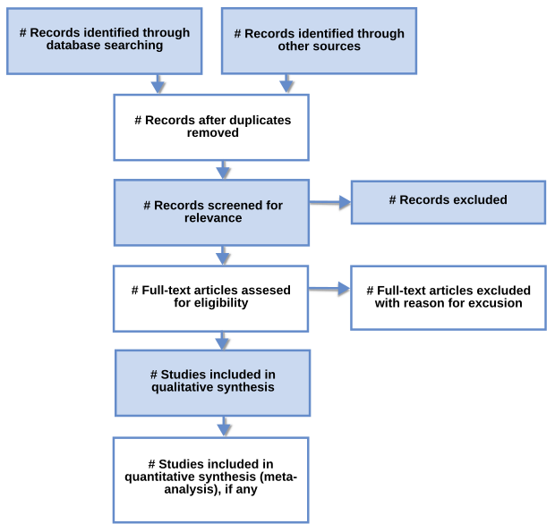

Research Methodology & IPR
How this paper will be set. No RM & IPR paper was supplied, so this guide uses the department's standard mid-semester format: 5 questions × (a) OR (b), 10 marks each. Expect Q1–Q2 from Unit 1 (CO1: problem formulation), Q3–Q4 from Unit 2 (CO2, CO3: literature analysis, plagiarism and ethics), and Q5 from Unit 3 (technical writing and proposals). The full expected paper is at the end of this guide.
The Research Problem
From noticing a problem to setting up the tools to solve it.
Syllabus: meaning of research problem · sources · criteria/characteristics of a good problem · errors in selection · scope & objectives · approaches of investigation · data collection · analysis · interpretation · necessary instrumentation
§ 1.1Meaning of a Research Problem
Research starts when you notice something is missing. You know some things (current knowledge), you want to know or achieve something more (desired knowledge), and the space between them is the research problem.
At its core, research is a systematic search for knowledge, a disciplined way of exploring the unknown. A research problem appears when a person or organisation faces a challenge, theoretical or practical, and does not know the best solution. Without a clear problem there is nothing to organise the research around: no objectives, no data to collect, no way to judge whether you succeeded. The research problem is the reason every later step exists.
Ask where problems come from and you find a simple structure. There must be someone who is troubled, a setting the trouble happens in, a goal they want, several ways they could act, and real doubt about which way is best. If any of these is missing you do not have a research problem. With no goal there is nothing to solve. With only one possible solution it is a task, not research. With no doubt about the answer you would just apply it. The professor lists this as six key features.
- An individual, group or organisation faces a difficulty. Example: a software company struggles with slow app performance.
- The problem exists in a specific environment. The slowdown happens only when many users are active on the cloud system. The environment sets the conditions under which the problem must be studied.
- Clear objectives are present. The company wants faster response time and lower server usage. Objectives turn a vague complaint into something you can measure.
- Multiple possible solutions exist. Improve database queries, add caching, or refactor the code.
- The solutions have unequal effectiveness. Caching may give better performance but is harder to implement, so the options really are different.
- There is uncertainty about the best solution. The company does not know which method gives the best result. Research exists to remove this uncertainty with evidence.
Suppose a food-delivery platform notices that its average checkout time goes from 1.2 s to 4.8 s every evening between 8 and 10 pm. All six features apply. The party is the engineering team. The environment is peak-hour traffic on a microservice cloud stack. The objective is checkout under 2 s at the 95th percentile. The alternatives are horizontal autoscaling, a read-replica database, or a Redis cache for the menu service. They have unequal effectiveness: autoscaling costs money, caching risks showing stale prices. There is real uncertainty. Written as a research problem: "Which combination of caching and autoscaling minimises peak-hour checkout latency for a microservice food-delivery platform within a fixed cloud budget?"
This framework is useful because it tests whether a topic is really a research problem. The same test also shows its limits. Pure exploratory research, for example "what are the experiences of gig workers?", often starts without clearly listed alternative solutions. There the "multiple solutions" feature is replaced by "multiple possible explanations". Formulating the problem is also iterative: the literature review (Unit 2) often reshapes the first statement, so the problem should be treated as a working hypothesis that you refine, not something fixed on day one.
- Professor's exact definition: a gap between what we know and what we want to know, studied through systematic research.
- The Current Knowledge → Gap → Desired Knowledge diagram.
- All six features in order, each with a one-line example.
- A well-framed sample problem statement written as a question.
- Link to the next step: the problem leads to objectives, which lead to methodology.
§ 1.2Sources of Research Problems
You find good research questions in a few places: what others have written, what experts complain about, what the data shows, what small trials reveal, what fascinates you, what industry struggles with, and what famous successes and failures teach.
1. Literature review (books, papers, past research)
Published work shows three kinds of openings: gaps in existing theories, conflicting findings (two studies disagree, so the truth is unsettled), and new applications of old ideas. Example: papers on Reinforcement Learning show that RL algorithms struggle with sample efficiency in robotics, which gives the problem "How can RL be made faster for robotic control?"
2. Discussions with experts and colleagues
Practitioners know about problems that have not reached the journals yet. An AI engineer mentions model drift in deployed ML systems, which gives the problem "How can models be retrained effectively under real-time data drift?"
3. Examination of data and records
Logs, datasets and historical records contain anomalies that need explaining. Network traffic logs show spikes at odd hours, which gives "How can anomalies in enterprise network traffic be detected?"
4. Pilot studies and exploratory investigations
A small survey or trial before the main study shows where the real difficulties are. Testing a new mobile app reveals usability issues, which gives "How can UI design be improved using early user feedback?"
5. Personal interest and curiosity
Motivation keeps a researcher going through months of work, so a problem you care about is worth something. Interest in quantum computing gives "How can quantum-circuit simulation be optimised on classical computers?"
6. Real-life situations and industry needs
Practical pain points from daily life or business. Manual code reviews take too long, which gives "Can AI-powered tools reduce code-review time while maintaining quality?"
7. Case studies and insight-stimulating examples
Studying a notable success or failure brings hidden issues to light. Large cybersecurity breaches expose weaknesses, which gives "How can we defend against zero-day exploits in containerised environments?"
The Transformer paper "Attention Is All You Need" (2017) came from source 1 and source 6 together. The literature showed that recurrent networks were slow to train because they process tokens one after another, and Google's translation business needed faster training on huge corpora. A gap in the literature matched an industrial need, and that combination tends to produce the most significant problems.
No single source is enough. Problems that come only from personal curiosity may lack significance. Problems taken only from industry may lack novelty. Problems taken only from the literature may lack real-world relevance. A strong researcher triangulates: find the gap in the literature, confirm with experts or data that it matters, and check with a pilot study that it can be tackled.
- Name all seven sources in the professor's order.
- For each source, give an example that ends in a problem written as a question (the professor's pattern).
- Mention the three openings in the literature: gaps, conflicting findings, new applications of old ideas.
- Finish with the idea of triangulating across sources.
§ 1.3Criteria & Characteristics of a Good Research Problem
Before committing months to a topic, check it against six tests. Can you state it exactly? Can you finish it? Can you get data for it? Does it matter? Is it new? Is it right to do?
1. Clear & well-defined. The problem must be stated precisely with no ambiguity. A vague or broad problem leads to confusion, wasted effort and irrelevant results. "Study climate change" is not a research problem. "Assess the impact of rising average summer temperatures on rice production in Uttar Pradesh, India, 2000–2020" is, because it fixes the variable, the outcome, the place and the period. Clarity means the researcher, the guide and the readers all understand exactly what is being studied.
2. Feasible. The problem must be realistic for the available time, funding, manpower and technology. A single student cannot map "global poverty trends over the past 100 years" but can study "poverty trends in rural districts of Uttar Pradesh in the past 20 years". Feasibility is what makes completion possible.
3. Researchable. It must be possible to collect, access and analyse data, either primary (surveys, experiments) or secondary (published reports). "The effect of social media on mental health" is researchable because survey instruments, datasets and clinical studies exist. The problem must be framed so the answer can be based on evidence.
4. Significant. It should contribute to society, academia, industry or policy, not be research for its own sake. "Causes of water scarcity in rural areas" is significant because it can inform policy and help communities.
5. Novel. It should add something new: a fresh perspective, a better method, a new application or an unexplored area. Novelty does not have to mean a completely new discovery. Filling a gap, challenging an assumption, or applying a known idea in a new context all count. Instead of repeating "customer satisfaction in online shopping", study "customer satisfaction in online grocery apps after COVID".
6. Ethical. No harm to participants, animals or the environment. Protect privacy, obtain informed consent, and avoid manipulation or misuse of findings. Medical trials need ethics-committee approval.
| Criterion | Question to ask | Fails when… |
|---|---|---|
| Clear | Can I state it in one exact sentence? | "Study education" |
| Feasible | Can I finish it with my time and resources? | "Invent a COVID vaccine this semester" |
| Researchable | Is there data I can collect or access? | "Psychology of 5th-century meditators" |
| Significant | Who benefits if I solve it? | Trivial puzzle with no users |
| Novel | What does it add beyond existing studies? | Yet another generic social-media survey |
| Ethical | Could anyone be harmed or exposed? | Scraping private health data without consent |
A final-year student suggests "Build an AI that detects all diseases from X-rays". It fails feasibility (it is enormous) and clarity ("all diseases"). The refined version, "Evaluate a lightweight CNN for detecting pneumonia on chest X-rays from the public NIH ChestX-ray14 dataset, deployable on mobile hardware", passes all six tests. It is specific, it fits a semester, the data is public, it matters in low-resource clinics, the mobile constraint makes it novel, and it uses de-identified public data, which keeps it ethical.
The criteria pull against each other. Pushing for novelty often costs feasibility, and pushing for significance can lead to topics that are too broad and so no longer clear. Good problem formulation is a balance. The usual way out is to narrow the scope (§ 1.5) so the problem stays significant and novel inside feasible limits.
- All six criteria in the professor's exact order and wording.
- A before-and-after example for "clear" (climate change → rice yields in UP).
- Say explicitly that novelty ≠ entirely new discovery.
- Discuss the trade-off between criteria, since that earns the analysis marks.
§ 1.4Common Errors in Selecting a Research Problem
Choosing the problem is where many researchers, especially new ones, go wrong, and a mistake here makes everything after it harder. The professor lists five errors. Notice that each one is a failed criterion from § 1.3: the errors are what the criteria look like when they are broken.
1. Too broad or too narrow. Too broad: "Impact of globalisation on world economies" is too large for one project. Too narrow: "Impact of social media on the academic performance of 10 students in Class 8B" has too small a sample to draw meaningful conclusions. Broad topics lack focus and narrow topics lack depth. (Breaks: clarity and significance.)
2. No data availability. Without reliable primary or secondary data the problem cannot be studied. Example: "psychological effects of ancient meditation techniques in 5th-century India". Findings become speculation instead of evidence. (Breaks: researchability.)
3. Beyond personal expertise. A beginner in computer science tackling an advanced ML optimisation problem without the background. Quality suffers when the researcher cannot handle the complexity. (Breaks: feasibility, human side.)
4. Ignoring time and resources. Some problems need years, advanced labs or large budgets. "Developing a new COVID-19 vaccine independently within a semester project." This leads to frustration and unfinished, poor-quality work. (Breaks: feasibility, material side.)
5. Copying problems without originality. Repeating someone else's study without adding anything, such as another survey on "impact of social media on students" with no new variables, context or method. (Breaks: novelty and significance.)
University project committees commonly reject proposals at the first review for errors 1 and 4: a title such as "Blockchain for Healthcare" (too broad) with a timeline that assumes access to hospital records that has not been negotiated (resources ignored). The usual fix is to narrow to one hospital process (for example consent logging), use a synthetic or public dataset, and prototype on a test network.
These errors are easy to prevent at the start and expensive to fix later. Three habits prevent most of them: a quick literature scan (prevents copying and shows whether data exists), a pilot study (tests feasibility), and a discussion with the guide (checks expertise). Replicating a study is not always an error, though: replication studies are valuable in science if they are declared openly and justified, for example testing whether a Western finding holds in the Indian context.
- All five errors, each with the professor's example and the reason it is a problem.
- Map each error to the criterion it breaks (this shows analytical understanding).
- Give at least one preventive habit.
§ 1.5Scope and Objectives of a Research Problem
Scope draws the fence around the study. Objectives are what you intend to achieve inside that fence.
Scope is set along several dimensions: population (who), geography (where), time period (when), variables (what) and methods (how). Setting the scope keeps the research manageable and focused, and keeps it within the time and resource limits. It is the tool that fixes the "too broad" error of § 1.4.
Objectives are usually written in two layers (developed further in Unit 3). The general objective is the overall aim. Specific objectives are smaller, measurable steps that together achieve it. Good objectives begin with action verbs (to measure, to compare, to design, to evaluate) and each one should be answerable by a particular analysis. Research objectives generally fall into four broad categories: exploratory (gain familiarity with a phenomenon), descriptive (describe characteristics accurately), diagnostic (find how often something occurs or what it is associated with) and hypothesis-testing / causal (test a cause-and-effect relationship).
| Element | Cybersecurity in IoT devices |
|---|---|
| Problem | IoT devices lack strong security because their processors are too weak for standard encryption. |
| Scope (in) | Smart-home devices (cameras, plugs, locks); ARM Cortex-M class hardware; data-in-transit. |
| Scope (out) | Industrial IoT, cloud-side security, physical tampering. |
| General objective | Design a lightweight encryption method for smart-home devices. |
| Specific objectives | (i) Benchmark AES-128 energy cost on target hardware; (ii) design a lightweight cipher variant; (iii) compare latency, energy and security margin against AES. |
A scope that is too narrow makes the results hard to generalise. A scope that is too wide makes the study impossible to finish. Stating what is out of scope openly also protects the researcher when examiners ask "why didn't you study X?". Objectives that cannot be measured ("to understand IoT security") cannot be judged as met or not met, which weakens the conclusions.
- Both definitions, including the "what it will not cover" part of scope.
- General vs specific objectives, with action verbs.
- The four categories of objectives.
- The professor's IoT example (scope: smart home; objective: lightweight encryption).
§ 1.6Approaches to Investigating Solutions & the General Research Process
Once the problem is identified and scoped, the next decision is how to investigate possible solutions. This depends on the type of data needed and the kind of results expected. There are two main approaches.
| Quantitative approach | Qualitative approach | |
|---|---|---|
| Focus | Numbers and measurement: collect numerical data and use statistics to test hypotheses | Opinions and insights: attitudes, behaviours and experiences that are hard to measure |
| Answers | "How much?", "How many?", "What is the relationship between X and Y?" | "Why?", "How do people feel?", "What are the challenges?" |
| Sub-types / methods | Inferential (use a sample to generalise about a population) · Experimental (manipulate variables in a controlled environment) · Simulation (build an artificial environment to model and test systems) | Interviews · focus groups · open-ended surveys |
| Example | Measure latency of 3 caching strategies over 10,000 requests | Interview 15 developers on why they avoid caching |
In practice many studies use mixed methods: quantitative results show what happens and qualitative results explain why.
The professor gives both a short six-step flowchart (Identify problem → Define objective → Collect data → Analyse data → Interpret results → Apply findings) and a detailed eleven-step process. The long version is what a 10-mark answer needs:
- Define the problem clearly. Not "study education" but "effect of online classes on high-school students' mathematics performance". A clear problem gives direction.
- Review related literature. Past research, journals, books and reports give background, prevent repetition and show gaps.
- Formulate hypothesis (if needed). A testable prediction: "Students who attend online classes regularly score higher in mathematics than those who do not." Exploratory research may skip this.
- Prepare the research design. The blueprint: type of research (survey, experimental, case study), tools (questionnaires, tests, interviews) and how data will be collected and analysed.
- Decide the sampling method. You cannot study everyone. Methods include random, stratified and purposive sampling. Example: 200 students from 5 schools. Good sampling makes results reliable and generalisable.
- Collect data. Primary (first-hand) or secondary (existing sources). Data must be accurate and unbiased.
- Execute the plan. Run the surveys, interviews or experiments systematically, monitor progress, maintain ethics and solve problems as they come up.
- Analyse data. Quantitative data → statistics (percentages, averages, correlations). Qualitative data → thematic or content analysis.
- Test hypothesis (if any). Compare the results with the prediction and accept or reject it on evidence.
- Interpret results and draw conclusions. Go beyond the numbers, link back to the objectives, and state limitations and future work. Example: online classes improve scores only when supported by parental involvement.
- Prepare and present the report. Introduction, objectives and hypothesis, methodology, analysis and findings, conclusions and recommendations, as a thesis, paper or presentation.
The UK's RECOVERY trial during COVID-19 followed this sequence at national scale. The problem was which existing drugs reduce COVID mortality. It reviewed the evidence, set the hypothesis that dexamethasone reduces 28-day mortality, used a randomised controlled design, sampled patients across 170+ hospitals, collected and analysed data, tested the hypothesis, and interpreted the result (dexamethasone cut deaths by about a third in ventilated patients). It reported within months. A clear design and a large, well-drawn sample produced evidence that changed practice worldwide.
The eleven steps are presented as a line, but real research loops. Analysis can show the design was flawed, and interpretation can open new problems. Quantitative work gives generalisable, statistically defensible results but can miss context. Qualitative work captures depth and meaning but is harder to generalise and more open to researcher bias. The approach should be chosen to fit the question, not the researcher's comfort zone.
- Quantitative vs qualitative, with the three quantitative sub-types (inferential, experimental, simulation).
- All 11 steps in order, each with its purpose. Note that hypothesis steps are optional.
- A flowchart, which is almost always expected.
- Mention that research is iterative (critical point).
§ 1.7Data Collection, Analysis & Interpretation
Data is the foundation of research: without it no meaningful analysis or conclusion is possible. Researchers need data (facts, figures, information) to study a problem, test hypotheses and draw conclusions.
| Aspect | Primary | Secondary |
|---|---|---|
| Collected by | The researcher, for this study | Others, for other purposes |
| Advantages | Original, specific to the problem, up to date | Easily available, cheaper, saves time |
| Disadvantages | Time-consuming, costly, needs effort | May be outdated, may not fit the problem, possible bias |
| Sentiment-analysis example | Collecting tweets through the Twitter/X API | Using the IMDB movie-review dataset |
Choosing: if the problem needs new insight, collect primary data. If reliable data already exists, use secondary data. Researchers often combine both.
Data analysis means breaking raw data into smaller, understandable parts to find patterns, trends and relationships. Methods: statistical analysis (mean, median, standard deviation, correlation, e.g. whether exam scores relate to study hours), machine-learning algorithms (classification, clustering, regression, e.g. spam vs not-spam), and data visualisation (graphs, charts, dashboards, e.g. website activity heatmaps).
Data interpretation means giving meaning to the results: answering "what do these results tell us?". The process is to compare results with the research objectives, relate the findings to theories or past studies, and explain the implications in real-world terms.
| Aspect | Data analysis | Data interpretation |
|---|---|---|
| Focus | Processing and organising data | Explaining the meaning of results |
| Nature | Technical, statistical, algorithmic | Conceptual, logical |
| Spam-detection example | Running the ML model to classify emails | Concluding the model is effective at 92% accuracy |
India's National Family Health Survey (NFHS-5) is primary data for the Ministry of Health, since it was collected by surveying about 6.4 lakh households. For a student who downloads it to study anaemia and diet it is secondary data. Whether data is primary or secondary depends on who collected it and why, not on the data itself. This point is often asked in exams.
Analysis without interpretation gives numbers with no meaning. Interpretation without rigorous analysis gives opinion without evidence. A 92% accuracy figure is meaningless until it is compared with a baseline (what if 90% of emails are not spam?). Good interpretation always asks compared with what? and states the limitations.
- Definitions, methods, pros and cons of primary vs secondary data, with the sentiment-analysis example.
- Three analysis methods: statistical, ML, visualisation.
- Three steps of interpretation.
- The analysis vs interpretation comparison table.
§ 1.8Necessary Instrumentation
1. Hardware: computers and servers (high-performance machines, often with GPUs for AI/ML); sensors (temperature, cameras, GPS for IoT or robotics); networking devices (routers, switches); specialised devices (Arduino, Raspberry Pi, drones, wearables).
2. Software: programming languages (Python, C++, Java, R, MATLAB); frameworks and libraries (TensorFlow, PyTorch, Scikit-learn for ML; NS2/NS3 for networking; MATLAB/Simulink for simulation); visualisation tools (Tableau, Power BI, Matplotlib, Seaborn); version control (Git/GitHub for collaborative coding and experiment tracking).
3. Databases and datasets: public datasets (Kaggle, UCI ML Repository, ImageNet, CIFAR-10, MNIST); government and industry data (cybersecurity threat databases, health statistics); self-collected data (sensors, APIs such as the Twitter or weather APIs, surveys).
Professor's example: AI image classification needs a GPU laptop (hardware) + TensorFlow (software) + the ImageNet dataset (data).
In social-science research, "instrument" also means the data-collection instrument: a questionnaire, interview schedule or observation checklist. It must be valid (measures what it claims to) and reliable (gives consistent results).
An IoT air-quality study might use ESP32 boards with MQ-135 and PM2.5 sensors (hardware), MQTT, Python and Grafana (software), and a self-collected dataset calibrated against government CPCB readings (data). Instrumentation choices directly affect validity: an uncalibrated sensor puts systematic error into every data point, and no statistics can remove it afterwards. Budget instrumentation early, since it is often the hidden cost that makes a problem infeasible.
- Definition and the three families (hardware, software, datasets), each with 3–4 examples.
- The GPU + TensorFlow + ImageNet example.
- For extra marks: validity and reliability of instruments, and calibration.
Flashcards · Unit One
Tap a card to turn it over. Grade yourself honestly.
Literature, Plagiarism & Ethics
Reading what others have done, giving them credit, and doing research honestly.
Syllabus: effective literature studies · approaches · analysis · plagiarism · research ethics
§ 2.1Effective Literature Studies
Before building a new house you survey the land, the neighbouring houses and the map of the area. Before doing research you survey the "map of knowledge": what other researchers have already built.
- Provides a comprehensive understanding of existing knowledge: an overview of prior research that gives a clear picture of the current state of the topic.
- Prevents duplication of research: you do not unknowingly repeat work that has already been done.
- Identifies research gaps: a systematic review shows areas that are under-explored, so you can focus on unresolved questions.
- Strengthens the research foundation: building on established knowledge makes new work more credible, grounded rather than directionless.
Step 1 · Identify keywords. Write down the main words and phrases of the topic. For "Brain Tumour Detection using AI": Brain Tumour, MRI, Machine Learning, Deep Learning, Tumour Detection. Keywords decide what the database searches return, and poor keywords mean relevant work is missed. Boolean combinations help: ("brain tumour" OR glioma) AND MRI AND "deep learning".
Step 2 · Search reliable databases. Google Scholar (free, broad), IEEE Xplore (engineering and technology), Springer & Elsevier (scientific papers), Scopus / Web of Science (high-quality, peer-reviewed, indexed).
Step 3 · Organise the papers. Do not just dump hundreds of PDFs in a folder. Sort them thematically (by topic), methodologically (by technique) or chronologically (by year, to see how the field developed). Reference managers such as Zotero or Mendeley make this practical.
Step 4 · Critically analyse the sources. For each paper ask: What problem? What method? What results? What limitations or gaps? The professor's contrast: do not write "This paper used CNN for tumour detection." Write "This paper used CNN, achieved 92% accuracy, but failed to test on a large dataset, which reduces reliability." The first sentence describes. The second evaluates.
Step 5 · Summarise and highlight gaps. Combine across papers: what is known and where the gap lies. "Most studies used CNN for tumour detection but ignored lightweight models for mobile devices, which leaves scope for mobile-compatible AI models." This sentence becomes the justification for your research problem, which connects back to Unit 1.
- Improves understanding: the topic seen from several perspectives.
- Helps build strong research questions: from "How to detect tumours?" to "How can lightweight deep-learning models detect tumours efficiently on mobile devices?"
- Avoids duplication: no time wasted repeating existing work.
- Strengthens research: credibility and validity come from building on prior studies.
The main risk in a literature review is confirmation bias: finding only the papers that support what you already believe. Keyword searches also miss work that uses different terms (for example "neoplasm" vs "tumour"). Two habits reduce this: snowballing (following the references of key papers backwards and their citations forwards) and deliberately searching for contradicting evidence. With AI-assisted search tools now common, every claim still has to be checked against the original paper, because summaries can misrepresent findings.
- Definition with the house/map analogy.
- Four purposes (understanding, no duplication, gaps, foundation).
- Five steps with the brain-tumour example running through them.
- The "describe vs critically analyse" sentence contrast, which shows analytical understanding.
- The benefits, and a gap statement as the output.
§ 2.2Approaches to Literature Study
There are several ways to conduct and organise a review. The professor lists seven, A to G. Some describe how rigorously papers are found and selected (narrative, systematic, scoping, meta-analysis). Others describe how the review is organised (thematic, chronological, methodological). A single review can be, for example, systematic in how it searches and thematic in how it is organised.
A. Traditional / Narrative review. A general description and discussion of existing research. It is flexible, papers are chosen for relevance, findings are discussed descriptively, and it is useful for understanding how a field developed. Example: reviewing ML techniques for hate-speech detection and discussing their pros and cons. Advantages: easy to do, gives a broad understanding, identifies major theories. Limitation: the choice of papers may reflect researcher bias.
B. Systematic Literature Review (SLR). Follows a predefined, structured process for identifying, selecting, analysing and reporting studies:
Advantages: systematic and transparent, reduces selection bias, reproducible, suitable for PhD-level research. Example: studying 100 papers from 2018–2026 to find which deep-learning techniques perform best for hate-speech classification.

C. Scoping review. Maps the existing literature on a broad area: major concepts, research methods, types of study, trends and gaps. It is useful when the area is large or relatively new, for example "LLMs in education", where you first need a map before asking narrow questions.
D. Meta-analysis. A quantitative approach that statistically combines results from several studies, for example pooling the accuracies reported for different ML algorithms to estimate an overall effect. Advantages: quantitative evidence, greater statistical power, allows comparison across studies. Limitation: needs enough comparable studies with statistical data.
E. Thematic review. Papers are grouped by common themes. NLP research, for instance, can be divided into traditional ML · deep learning · transformer models · multilingual models · explainable AI · dataset issues, with findings compared within each theme.
F. Chronological approach. Organised by time or historical development, showing how thinking changed (e.g. n-grams → RNNs → Transformers).
G. Methodological approach. Organised by the research methods used:
| Method | Purpose |
|---|---|
| Survey | Collect opinions/data |
| Experiment | Test a hypothesis |
| Case study | Study a specific situation |
| Machine learning | Prediction/classification |
| Qualitative analysis | Understand experiences/themes |
| Quantitative analysis | Analyse numerical data |
| Approach | Rigour | Output | Best when | Main weakness |
|---|---|---|---|---|
| Narrative | Low–medium | Descriptive discussion | Understanding a field | Selection bias |
| Systematic (SLR) | High | Answer to a focused question | PhD work, evidence synthesis | Time-consuming |
| Scoping | Medium–high | Map of concepts, methods, gaps | Broad or new area | No quality appraisal of depth |
| Meta-analysis | Highest (quantitative) | Pooled statistical effect | Many comparable numeric studies | Needs comparable data |
| Thematic / Chronological / Methodological | Organising structures | Grouped discussion | Writing up any review | Depends on the underlying search |
Rigour costs time. An SLR can take months, while a narrative review suits an early-stage project report. Meta-analysis is the strongest evidence in medicine (Cochrane reviews) but is often impossible in computer science, where studies use different datasets and metrics, so the "comparable studies" condition fails. In practice, a B.Tech or M.Tech project usually does a narrative review with a structured search, organised thematically.
- All seven approaches, A–G, with a one-line definition and an example each.
- The SLR pipeline written in sequence, with a PRISMA-style diagram.
- Advantages and limitations for narrative, SLR and meta-analysis (the professor lists these specifically).
- A comparison table, which examiners appreciate.
§ 2.3Plagiarism
If a classmate copies your hard-won project and submits it as their own, you feel cheated. That is what plagiarism is. Honesty is a fundamental requirement of research.
- Text is copied directly from books, websites or papers without citing the author.
- Ideas are borrowed but their source is not mentioned.
- A person reuses their own previously submitted or published work and presents it as "new".
| Type | What it is | Professor's example | Intent? |
|---|---|---|---|
| Direct | Copying a whole paragraph or section without quotation marks or citation | Copy-pasting an article and presenting it as original | Deliberate |
| Self-plagiarism | Reusing your own earlier published or submitted work without referencing it | Submitting the same project report in two courses | Usually deliberate |
| Mosaic (patchwork) | Combining sentences from several sources, slightly modified and merged, without citation | Taking material from 4–5 papers, paraphrasing minimally, citing none | Often deliberate |
| Accidental | Unintentionally forgetting a citation or making citation errors | Rewording an author's idea but not naming them | Unintentional, still plagiarism |
Why is it wrong? It is unethical because it takes credit that belongs to someone else. It damages reputation. It is detectable: universities use tools such as Turnitin, Grammarly and Urkund, and being caught can mean failing or disciplinary action. Most importantly, it prevents genuine learning and independent thinking.
How to avoid it: always cite the source of any borrowed idea, quote or data. Run plagiarism-detection tools to check originality. Paraphrase properly, restructuring the idea in your own words while still citing the original author. Paraphrasing without a citation is still plagiarism.
Consequences: academic penalties (failing grades, thesis rejection), loss of credibility and reputation, and in severe cases legal consequences (copyright infringement).
India's UGC (Promotion of Academic Integrity and Prevention of Plagiarism in Higher Educational Institutions) Regulations, 2018 set graded penalties for theses based on similarity in the core work: up to 10% — minor, no penalty; 10–40% — revise and resubmit; 40–60% — debarred from resubmission for a period; above 60% — registration cancelled. Similarity reports exclude quoted material, references and common phrases. Internationally, retractions for plagiarism are recorded publicly (e.g. by Retraction Watch), and they follow a researcher for their whole career.
Detection software measures textual similarity, not plagiarism. A high score may just reflect correctly quoted passages or standard technical phrases, and a low score can hide idea plagiarism or translation plagiarism. Generative AI adds a new grey area. Many journals now require disclosure of AI assistance, and text generated from uncited sources can amount to plagiarism. Judgement by a human evaluator is still essential.
- Definition stressing "credit where it is due".
- The three situations in which plagiarism occurs.
- Four types, each with an example; note that accidental plagiarism still counts.
- Why it is wrong, how to avoid it, and consequences (three separate sub-headings).
- Name the tools (Turnitin, Urkund) and, for extra marks, the UGC 2018 levels.
§ 2.4Research Ethics
If a doctor lies about a medicine's effect, lives are at risk. If a researcher fabricates data, society is misled, resources are wasted and people can be harmed. Ethics is the backbone of responsible research.
- Honesty: report data, methods and results truthfully. Fabrication (making up data) and manipulation (changing results) are strictly unethical. If an algorithm gets 75%, do not report 90%.
- Integrity: follow approved methods consistently, without shortcuts or skipped steps. If 100 samples are required, using 50 and still claiming valid results is unethical.
- Respect: acknowledge other researchers' contributions through citation. A dataset built by another scholar must be credited.
- Confidentiality: keep participants' personal information private. Revealing a participant's identity in published health data is a violation.
- Avoiding bias: present findings fairly, without personal, social or cultural prejudice. If Method A beats Method B, report it even if you prefer B.
- Builds trust in universities, scientists and institutions.
- Ensures validity and reliability: honest results can be verified, tested and reused.
- Protects participants' rights and well-being: dignity, safety and respect, especially in medical, psychological and social studies.
- Prevents misuse of knowledge: science applied for society's benefit, not harm.
Professor's integrated example, a brain-tumour detection project: faked accuracy means doctors trust the system wrongly and patients suffer; revealed patient identities mean privacy is violated; honest reporting, even of modest accuracy, means future researchers can build on the work and make real progress.
The Hwang Woo-suk scandal (2005): a South Korean scientist fabricated stem-cell cloning data published in Science. It was retracted, and national research funding and public trust suffered. This is a breach of honesty. The Facebook emotional-contagion experiment (2014): the feeds of about 689,000 users were manipulated without explicit informed consent, which caused worldwide criticism. This is a breach of respect for participants. Formal safeguards include Institutional Ethics Committees / IRBs, informed consent forms, and in India the ICMR National Ethical Guidelines (2017) for biomedical research and the DPDP Act 2023 for personal data.
Ethics sometimes conflicts with research convenience. Anonymisation reduces the usefulness of data, and consent requirements slow recruitment. AI research raises newer questions: scraping public web data (is "public" the same as "consented"?), dataset bias harming minorities, and dual-use risks. The five principles remain the test to apply: would I be comfortable if every step of my method were published?
- Definition as a "moral compass", with the doctor analogy.
- Five principles, each with the professor's example (75% vs 90%, 50 vs 100 samples, and so on).
- Four reasons ethics matter.
- The brain-tumour integrated example; a real scandal adds extra marks.
- Mention of ethics committees and informed consent.
Flashcards · Unit Two
Includes cumulative cards from Unit One (↺).
Technical Writing & the Proposal
Writing up the research and getting a proposal approved by a committee.
Syllabus: effective technical writing · how to write a report/paper · developing a research proposal · format of research proposal · presentation and assessment by a review committee
§ 3.1Effective Technical Writing
Good technical writing reads easily. The reader should understand the idea without noticing the writing.
The main objective is to communicate research findings, processes and results in a way that reduces confusion and improves understanding. Everything follows from the audience: experts need detailed insight, while general readers need simplified explanation. The same result, "the model reduced false positives by 15%", might be written with confusion matrices for a journal and as "one in seven false alarms eliminated" for a hospital administrator.
- Clarity (the foremost requirement): simple, direct language with no ambiguity; concise sentences with no unnecessary words; ideas logically connected.
- Coherence: the document flows, linking introduction, methods, results and conclusion in a meaningful order.
- Accuracy: verified facts, figures and interpretations, with no exaggeration or assumptions.
- Objectivity: no personal opinion or emotional language; evidence, data and logic instead. Not "The results are amazing" but "The results indicate a 15% increase in efficiency compared to previous methods."
Effectiveness is judged by how well the writing turns raw data into meaningful insight. Detailed experimental results are of little value unless others can understand, replicate or use them in decisions. Good technical writing carries knowledge between academia, industry and organisations.
Google's engineering design docs and Amazon's six-page narrative memos make technical writing central to decisions: meetings start with silent reading, and proposals written in clear prose (not bullet slides) are debated on evidence. RFCs (Request for Comments) that define internet protocols such as TCP and HTTP are technical writing that has to be unambiguous enough for engineers worldwide to build systems that work together.
Clarity and completeness can pull against each other. Over-simplification can drop important caveats, while full precision can make text unreadable. Practical tools that help: active voice, one idea per paragraph, figures with self-contained captions, consistent terminology (do not switch between "latency" and "delay"), and readability checks. Technical writing is revised, not written in one attempt, which links to the report-writing steps in § 3.2.
- Definition: clear, precise, structured; audience-centred; not about impressive vocabulary.
- The four pillars clarity → coherence → accuracy → objectivity, each explained.
- The "amazing" vs "15% increase" contrast.
- Why it matters: turning raw data into usable, replicable insight.
§ 3.2How to Write a Research Report
Writing a research report is not simply putting words on paper. It is the result of slow, careful and accurate work based on logical reasoning and systematic effort. A well-written report presents the findings in a clear, organised and convincing way. The professor describes six steps.
1. Logical analysis of the subject matter. Analyse the material thoroughly to decide how it will be presented. There are two ways to develop a subject: logical development, organised by mental connections and associations and usually moving from simple to complex; and chronological development, where events are arranged in the order they happened (instruction manuals, historical accounts). This step gives the report its flow and clarity.
2. Preparation of the final outline. The outline is the framework of the report. It arranges ideas logically, reminds the writer of key points, avoids repetition and keeps the report focused. It is the roadmap for the draft.
3. Preparation of the rough draft. The findings are turned into written form. The rough draft covers the procedure adopted for data collection, the limitations of the study, the technique of analysis used, the broad findings and generalisations, and suggestions on the problem. It does not have to be perfect; it captures the essence.
4. Rewriting and polishing the rough draft. The most challenging and important stage, which usually takes longer than writing the draft. Check unity and cohesion, logical development and connection of ideas, grammar, spelling and sentence construction, and consistency of style. Polishing turns an average report into an excellent one.
5. Preparation of the final bibliography. It acknowledges every source used, usually in two parts:
- Books and pamphlets: alphabetical by author's surname, then title, place, publisher, year, volumes.
Kothari, C.R., Quantitative Techniques, New Delhi, Vikas Publishing House Pvt. Ltd., 1978. - Articles from magazines and newspapers: author, "article title" in quotation marks, journal name in italics, volume, issue, date, page.
Robert V. Roosa, "Coping with Short-term International Money Flows", The Banker, London, September 1971, p. 995.
Using one referencing method consistently is essential.
6. Writing the final draft. Concise, objective, in simple language. Avoid vague expressions such as "it seems" or "there may be". Avoid unnecessary jargon, include illustrations and examples, keep it original and engaging, and make sure the report helps solve a problem and adds to knowledge.
| Part | Contents |
|---|---|
| Preliminary pages | Title page, certificate/declaration, acknowledgements, abstract, table of contents, list of figures and tables |
| Main text | Introduction (background, problem, objectives, hypothesis) → Literature review → Methodology → Results/analysis → Discussion/interpretation → Conclusions, recommendations, limitations, future scope |
| End matter | Bibliography/references, appendices (questionnaires, code, raw tables), index (for long works) |
Writing a research paper (journal or conference) compresses this into the IMRaD structure: Introduction, Methods, Results, and Discussion, preceded by title, abstract (about 150–250 words) and keywords, and followed by references. Venues set page limits and templates (IEEE, Springer LNCS, ACM), and papers go through peer review.
Students most often skip Step 4, submitting the rough draft as the final one, and Step 5, where they list references inconsistently. Reviewers read that as carelessness in the research itself. Modern reference managers (Zotero, Mendeley, BibTeX) automate formatting, but the writer still decides what to cite and must check every citation.
- All six steps in order, with the details of each.
- Logical vs chronological development.
- The five contents of a rough draft (procedure, limitations, analysis technique, findings, suggestions).
- Bibliography formats for books and articles, with the Kothari example.
- Final-draft rules (avoid "it seems"). For extra marks: report layout and IMRaD.
§ 3.3Developing a Research Proposal
A proposal is a persuasive document you write before you are allowed to start: it shows you have thought the study through and can do it.
1. Identifying the problem. Specific, researchable and significant. Understand the current state of knowledge, identify gaps, and frame a focused question. Not "social media affects students" but "How does daily social media usage influence the academic performance of undergraduate students in India?"
2. Objectives. Clear, measurable, achievable. General objective: investigate the impact of social media on academic performance. Specific objectives: measure average daily social-media time; assess the correlation between usage and GPA.
3. Review of literature. Summarise and analyse relevant past studies to understand existing knowledge, find gaps and contradictions, and justify the need for your research. It positions your work as a meaningful contribution and helps refine the question and method.
4. Methodology. Research design (experimental, descriptive, survey, qualitative, quantitative); sampling techniques (random, purposive); data-collection tools (surveys, interviews, observation, experiments); methods of analysis (statistical, thematic). It must be detailed enough for reviewers to judge feasibility and reliability.
5. Expected outcomes. Anticipated results and their significance, tied directly to the objectives. Academic insight (new evidence on social-media habits and performance) and practical application (interventions for students or institutions).
6. Timeline and budget. Timeline: phases with completion estimates (literature review, data collection, analysis, writing), often as a Gantt chart. Budget: materials, software, travel, participant incentives, showing that the work is feasible within the available means.

Indian funding agencies such as DST-SERB / ANRF (Core Research Grant) and AICTE schemes require exactly these parts: a problem statement with a review of the status of research, objectives, methodology, expected outcomes, a year-wise work plan and a head-wise budget (equipment, consumables, manpower, travel, contingency). A proposal with an excellent idea but an unrealistic budget or vague methodology is usually rejected at the first screening.
A proposal is a promise. Promising too much ("will solve cancer detection") hurts credibility, while promising too little fails the significance test. The best proposals match ambitious objectives with a conservative, clearly feasible method, and include a risk and contingency line (for example, "if hospital data is delayed, the public BraTS dataset will be used").
- Definition: what, why, how, written to convince a committee or funder.
- The six steps in the professor's flow, each with its sub-points.
- General vs specific objectives, with the social-media example.
- The four components of methodology.
- Gantt chart mentioned or drawn; budget heads listed.
§ 3.4Format of a Research Proposal
§ 3.3 describes the thinking process. The format is the document you submit. The professor gives an eight-part format.
- Title page: the first impression. Title, researcher's name, institution/department, and possibly supervisor and date. The title must be clear, precise and reflect the core idea: not "Study on Education" but "Impact of Digital Learning Tools on Academic Performance of Undergraduate Students".
- Introduction and problem statement: background, why the research is necessary, and the exact problem. A good problem statement narrows the focus and gives the rationale in the current context.
- Objectives and hypotheses: measurable aims ("to identify factors influencing consumer preference for eco-friendly products") and, where applicable, hypotheses stating the expected relationship between variables ("There is a significant relationship between students' study habits and their academic performance"). These guide the design and analysis.
- Review of literature: establishes what has been done and what gaps remain, gives the theoretical foundation, prevents duplication, and shows the study is new and relevant.
- Methodology (one of the most critical parts): research design (experimental, descriptive, exploratory); sampling (population, sample size, selection technique); data-collection tools (questionnaires, interviews, observation, experiments); statistical techniques (regression, correlation, thematic analysis). It must be practical, reliable and suited to the objectives.
- Work plan and time schedule: a timeline of stages (literature review, data collection, analysis, writing) in tabular or Gantt form, which shows a realistic, time-bound approach.
- Budget (if applicable): for funded research, the estimated cost of data collection, equipment, software, field visits and manpower. A clear, justified budget lets funders judge financial feasibility.
- References and bibliography: references are works cited in the text; a bibliography may also include works consulted but not cited. Use a consistent style (APA, MLA, Harvard, IEEE). This adds credibility and shows academic honesty.
Compare § 3.3 and § 3.4. The development steps include Expected Outcomes, and the format includes Title page and References. A complete proposal usually has all of them, so in the exam mention expected outcomes/significance as a sub-part of section 2 or 5. Committees often treat the proposal's references as a proxy for the quality of the literature review: old, unindexed or non-peer-reviewed sources are a warning sign.
- All eight sections in order, each with its purpose.
- Title example (bad vs good) and a hypothesis example.
- Methodology described as "most critical", with its four sub-parts.
- References vs bibliography distinction; name the citation styles.
§ 3.5Presentation & Assessment by a Review Committee
Once a proposal or report is ready, it is usually presented before a review committee for approval. The committee evaluates its feasibility, originality and significance, the same qualities as the "good research problem" criteria in Unit 1.
During the presentation the researcher should confidently highlight the problem statement, objectives, methodology and expected outcomes, using visual aids such as slides, graphs and charts to make the points clear. A common structure for a 10–15 minute slot: title (1 slide) → motivation and problem (2) → literature gap (2) → objectives (1) → methodology with a diagram (3) → expected outcomes (1) → timeline and budget (1) → references (1), then Q&A.
| The committee assesses… | What they are really asking | How to prepare |
|---|---|---|
| Clarity in defining the research problem | Can you state it in one sentence? | Rehearse a one-line problem statement |
| Originality and relevance | What is new, and who cares? | A literature-gap slide with citations |
| Appropriateness of methodology | Will this method actually answer the question? | Justify each method choice against alternatives |
| Practicality of timeline and budget | Can you finish with these resources? | A Gantt chart and head-wise budget |
| Researcher's ability to justify and defend | Do you understand your own proposal? | Prepare for likely questions; admit limitations honestly |
The outcome is not only approval or rejection. The assessment also gives constructive feedback to improve the proposal or report. Common outcomes are: accepted, accepted with minor revisions, major revision and re-presentation, or rejected.
In Indian universities, PhD candidates present to a Research Advisory Committee (RAC) or Departmental Research Committee for approval of the synopsis, followed by periodic progress seminars. B.Tech major projects are similarly reviewed by a panel in stages (zeroth, mid-term and final evaluation). Funding agencies use expert committees who score proposals on scientific merit, novelty, feasibility and the investigator's track record.
Committee review is a form of peer review. It catches weak designs early, but it can be conservative and favour safe, incremental topics over risky, novel ones. A presenter can offset this by showing a clear de-risking plan. Treat questions as useful input, not attacks: defensiveness is itself assessed under "ability to justify".
- Purpose: the committee evaluates feasibility, originality and significance.
- What to highlight in the presentation (problem, objectives, methodology, outcomes) and the use of visual aids.
- All five assessment criteria.
- The outcome includes constructive feedback, not only approve or reject.
Flashcards · Unit Three
Includes cumulative cards from Units One and Two (↺).
Expected Question Paper
A full paper in the department's format, with a model answer blueprint under each question.
Rationale. No RM paper was supplied, so these questions follow the department's pattern: one Unit 1 topic per (a)/(b) pair for Q1–Q2, Unit 2 in Q3–Q4, Unit 3 in Q5, with case-style wording like the BI paper's "your university" questions. Each blueprint is a plan for about 3–4 answer-sheet pages.
(a) What is a research problem? Explain its key features and the sources from which research problems arise, with examples from computer science.
Model answer blueprint · 1(a)
[Definition 2] + [Diagram 1] + [Six features 3] + [Seven sources 3] + [Conclusion 1]
- Opening (½ page): the professor's definition: a question, issue or difficulty studied and solved through systematic research; the gap between what we know and what we want to know. Add one line on research as a systematic search for knowledge.
- Diagram: Current Knowledge → Identified Gap → Desired Knowledge (Plate 1.1).
- Key features (1 page): number all six and carry one running example through them (slow cloud app: company, cloud peak load, faster response, caching/queries/refactoring, unequal effectiveness, uncertainty).
- Sources (1–1½ pages): seven sub-headings. For each, one sentence of explanation plus an example problem written as a question (RL for robotics; model drift; network-log anomalies; UI from pilot tests; quantum simulation; AI code review; zero-day container exploits).
- Close: the best problems come from triangulating sources (literature gap + industry need), e.g. the Transformer.
(b) "A poorly chosen research problem dooms a project before it begins." Discuss the criteria of a good research problem and the common errors in selecting one. How do scope and objectives help avoid these errors?
Model answer blueprint · 1(b)
[Criteria 4] + [Errors 3] + [Scope & objectives 2] + [Evaluation 1]
- Introduction: selecting the problem is the first and most critical decision, and every later step depends on it.
- Six criteria (clear, feasible, researchable, significant, novel, ethical), each with a bad → good example. Use the climate change → UP rice yields 2000–2020 example for clarity.
- Five errors (too broad or narrow, no data, beyond expertise, ignoring time and resources, copying). Draw a two-column table mapping each error to the criterion it breaks. This is where the analysis marks are.
- Scope and objectives: definitions. Scope fixes "too broad" and "ignoring resources"; measurable objectives fix vagueness. Use the IoT example (scope: smart-home devices; objective: lightweight encryption).
- Conclusion: the criteria pull against each other (novelty vs feasibility), and narrowing the scope resolves most of the tension.
(a) Explain the general steps of the research process with a neat flowchart. Distinguish between the quantitative and qualitative approaches to investigating solutions.
Model answer blueprint · 2(a)
[Flowchart 2] + [11 steps 5] + [Quant vs qual 3]
- One-line introduction: research is systematic, and the process gives it order.
- Flowchart first (Plate 1.2), 11 boxes. Write "if needed" on hypothesis steps 3 and 9.
- Explain each step in 2–3 lines with the online-classes/mathematics example running through all of them (hypothesis: regular attendees score higher; sample: 200 students from 5 schools; conclusion: improvement only with parental involvement).
- Approaches table: focus, questions answered, sub-types (inferential, experimental, simulation) vs methods (interviews, focus groups, open-ended surveys), plus an example each. Mention mixed methods.
- Close with the point that research is iterative, not strictly linear.
(b) Differentiate between primary and secondary data. Explain data analysis and interpretation, and the instrumentation needed for a computer-science research project.
Model answer blueprint · 2(b)
[Primary vs secondary 3] + [Analysis vs interpretation 3] + [Instrumentation 3] + [Integration 1]
- Data is the foundation of research. Give definitions of primary and secondary data, then a comparison table (collected by, methods/sources, advantages, disadvantages, sentiment-analysis example). State when to choose which, and that researchers often combine both.
- Analysis: meaning plus three methods (statistics, ML, visualisation) with examples. Interpretation: meaning plus three steps (compare with objectives, relate to theory, explain implications). Add the comparison table (focus, nature, spam example: run the model vs conclude 92% effective).
- Instrumentation: hardware, software, datasets with examples. Finish with the GPU + TensorFlow + ImageNet example.
- Integration: one worked pipeline, e.g. an IoT air-quality study (sensors → Python → visualisation → interpretation against CPCB standards).
(a) What is a literature review? Why is it needed? Describe the steps for conducting an effective literature review, taking "Brain Tumour Detection using AI" as your topic.
Model answer blueprint · 3(a)
[Definition + analogy 1½] + [Need 2] + [5 steps 5] + [Benefits 1½]
- Definition, plus the house-building "map of knowledge" analogy. Stress that it means reading, comparing and critiquing, not collecting.
- Four needs: understanding, no duplication, gaps, foundation.
- Five-step pipeline diagram (Plate 2.1), then each step applied to the brain-tumour topic: the keywords list; the databases (Scholar, IEEE Xplore, Springer/Elsevier, Scopus/WoS); organising (thematic/methodological/chronological); critical analysis with the descriptive vs critical sentence; the gap statement (lightweight mobile models).
- Benefits, including the refined research question ("How to detect tumours?" → "lightweight DL models on mobile devices").
(b) Compare the narrative review, systematic literature review, scoping review and meta-analysis. Also explain thematic, chronological and methodological ways of organising a review.
Model answer blueprint · 3(b)
[4 approaches × 1½ = 6] + [3 organisers 2] + [Comparison table 2]
- For A–D give a definition, characteristics, advantages, limitations and an example (hate-speech detection works well as a running example). Write the SLR pipeline in full and sketch a PRISMA box diagram.
- E, F, G: define each and give an example (NLP themes; n-gram → RNN → Transformer timeline; the methods/purpose table).
- End with the comparison table (rigour, output, best when, weakness) and the point that rigour trades off against time.
(a) What is plagiarism? Explain its types with examples. Why is plagiarism considered wrong, and how can a researcher avoid it?
Model answer blueprint · 4(a)
[Definition + occurrences 2] + [4 types 4] + [Why wrong 1½] + [Avoidance 1½] + [Consequences 1]
- Definition emphasising credit, plus the classmate-copying analogy. List the three situations in which it occurs (copying text, borrowing ideas, reusing your own work).
- Types table: direct, self, mosaic, accidental, with the professor's examples. State clearly that accidental plagiarism is still plagiarism.
- Why wrong: unethical, reputation, detection tools (Turnitin, Grammarly, Urkund), blocks learning.
- Avoid: cite, use tools, paraphrase and cite. Consequences: grades or thesis rejection, credibility, legal action.
- For extra marks: the UGC 2018 similarity levels (≤10% none; 10–40% revise; 40–60% debar; >60% cancel).
(b) "Research ethics form the backbone of responsible research." Explain the key principles of research ethics with examples, and discuss why ethics matter, using a brain-tumour detection project as a case.
Model answer blueprint · 4(b)
[Definition 1] + [5 principles 5] + [Why matter 2] + [Case 2]
- Define ethics as a moral compass (fairness, honesty, responsibility), with the doctor-lying analogy.
- Principles diagram (Plate 2.3). Each principle with the professor's example: 75% vs 90%; 50 of 100 samples; crediting datasets; revealing patient identity; Method A vs B.
- Four reasons: trust, validity and reliability, participants' rights, preventing misuse.
- Brain-tumour case with three outcomes (faked accuracy, revealed identities, honest reporting). Add a real scandal (Hwang 2005) and safeguards (ethics committee, informed consent, ICMR 2017, DPDP Act 2023).
(a) What is effective technical writing? Describe the steps involved in writing a research report.
Model answer blueprint · 5(a)
[Technical writing 3] + [6 steps 6] + [Close 1]
- Definition (clear, precise, structured, audience-centred) and the four pillars as a chain: clarity → coherence → accuracy → objectivity, with the "amazing" vs "15%" example.
- Six-step diagram (Plate 3.1), then each step. Include logical vs chronological development; the rough-draft contents (5 items); rewriting as the hardest step; both bibliography formats with the Kothari and Roosa examples; final-draft rules ("avoid it seems").
- Close with IMRaD for research papers.
(b) What is a research proposal? Explain the steps in developing it and its standard format. How is a proposal assessed by a review committee?
Model answer blueprint · 5(b)
[Definition 1] + [Development 3] + [Format 3] + [Committee 3]
- Definition: what, why, how, written to convince.
- Development flow: problem → objectives → literature review → methodology → expected outcomes → timeline and budget (one or two lines each, with the social-media example).
- Format: the eight-section stack (Plate 3.3), with title and hypothesis examples; mark methodology as most critical; mention a Gantt chart.
- Committee: the presentation content plus visual aids; the five assessment criteria (use a table); outcomes including constructive feedback.